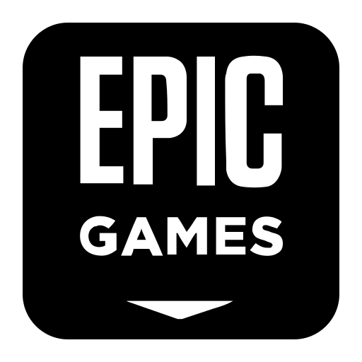

How to Play
Though physical discs are available less and less, there are a number of sites and platforms where you can purchase digital game codes. You can then use these game codes with specific platforms to build up your game library. While there are a number of different options, we will cover some of the most popular sites and platforms to help build your PC gaming library.
 Steam
Steam
Steam is the biggest game platform there is. It is owned by Valve, which has made popular games such as Half Life, Portal, and Team Fortress. Here are a few reasons to choose Steam:
- Has a massive digital library
- Allows you to easily organize your game library via custom collections
- Has the Steam Workshop for additional game content
- Easily connect with friends for online gaming
- Create a shared family library for your family members
 Epic Games Store
The Epic Games Store is owned by Epic, the creators of Fortnite and Unreal Engine. They are a newer option and lack some of the features you'll find in Steam, but is still worth considering for the following reasons:
- Has a vast digital library
- Earn Epic Rewards points with every purchase
- Has at least one free game available monthly
 Humble Bundle
Humble Bundle
Humble bundle isn't a gaming platform, but it is worth mentioning. They sell a number of games, books, and software with your money going towards specfic charities. Here are some reasons to check them out:
- A portion of your purchases go towards supported charities
- Game codes are usually redeemable on Steam
- They regularly offer bundles of games where you can pay what you want, though usually with a minimum amount required. Who doesn't want $300 worth of games for $30?
GOG
GOG is another site to purchase games. These games don't require any specific platform for installation, though their GOG Galaxy app can help make it easier. You may consider GOG for the following reasons:
- Purchase DRM-free games
- Offline installation
- GOG Galaxy for easier library management